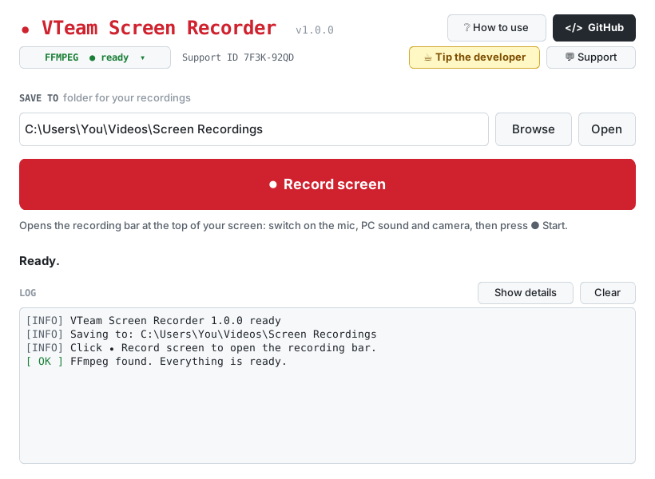

Free screen recorder for Windows
Record your screen. Sound, mic and camera in one MP4.
A small, free recorder with a compact bar like the Snipping Tool. Your PC sound and voice stay in sync, your face can sit in a bubble or a background-free cutout, and you can pause any time.
Windows 10/11, 64-bit · about 50 MB · one file, no installer · Release notes & SHA-256

What it does
Built on FFmpeg, with your graphics card doing the work when it can.
Compact recording bar
A small dark bar with icons only, like the Windows Snipping Tool: Start/Stop, timer, mic, PC sound, camera, settings. It never shows in the video.
PC sound + mic, in sync
Record everything you hear and your voice together. Sound and picture are lined up when the video is saved, within about one frame.
Live mic icon
The mic icon turns green when it hears you and warns you if a recording's mic was silent, so you don't lose a take.
Camera, like streamers
Your face in a round bubble, or as a cutout with the background removed, in four sizes. Drag it anywhere.
Pause and resume
Pause as often as you like; the paused parts are left out and sound stays in step. You still get one MP4.
Smooth on laptops
Uses NVIDIA, Intel or AMD encoding when available, with the CPU as backup. 30 or 60 fps, Standard or High quality.
Free. Tip if you like it.
Every feature is free. No account, no ads, no watermark, no time limit.
Everything, free
- Full-screen recording as one MP4
- PC sound and microphone, in sync
- Camera bubble or background cutout
- Pause and resume
- No watermark, no time limit
☕ Buy me a chai optional
A small tip to the developer. Pick an amount, tick the box, then scan with GPay, PhonePe, Paytm or any UPI app.
to show the QR code
Amount: ₹50
UPI ID: shown after you tick the box
Donations go straight to my bank account. Thank you! 🙏
Donations aren't tax-deductible (I'm not a charity). See the terms and refund policy.
Install in a minute
Windows 10 or 11, 64-bit.
- Download
VTeamScreenRecorder.exeand put it in its own folder, for exampleDocuments\VTeam Screen Recorder. The app keeps its settings next to the file. - Double-click it. If Windows shows "Windows protected your PC", click More info → Run anyway. That box appears because the app isn't code-signed yet.
- Let it set up FFmpeg. On first launch it offers to install FFmpeg (free, open-source) for you. Then click ⏺ Record screen.
To check your download, compare its SHA-256 with the one on the release page. In PowerShell: Get-FileHash .\VTeamScreenRecorder.exe -Algorithm SHA256
Questions
Short answers to the common ones.
Is it really free?
Yes. Every feature is free, with no watermark and no time limit. Tips are optional and don't unlock anything.
Does the bar show up in my recording?
No. The bar and the app window are hidden from the recording (Windows 10 version 2004 or newer). The camera bubble is recorded, so people can see you.
Why is Netflix or Prime Video black in my recording?
Those players use DRM copy protection, which Windows blacks out in every screen recording. The app doesn't try to get around it.
Does it work on Mac or Linux?
No, Windows 10 and 11 (64-bit) only.
Why does Windows warn me when I open it?
New apps without a paid code-signing certificate get a SmartScreen warning. Download only from this site or the GitHub Releases page, and compare the SHA-256 if you want to be sure.
Does the app collect my data?
No analytics, no tracking, no account, and your recordings never leave your PC. It only sends something when you choose to use the Support form. Details in the privacy policy.
Support
Something not working? Two ways to reach me.
💬 In the app
Click 💬 Support at the top right. Pick a subject, describe the problem and attach a screenshot if it helps. Your support ID is added for you.
vteam732@gmail.com. Please include your support ID (shown at the top of the app; click it to copy).
Record responsibly. Tell people before you record a call or meeting, and respect copyright and other people's privacy.